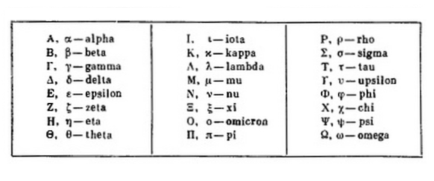

Astăzi, unele dintre invențiile grecești sunt utilizate în viața noastră de zi cu zi, în timp ce altele sunt folosite de profesioniști în domeniile lor respective. Descoperirile lor în domeniul astronomiei, matematicii și geografiei au pionierat o serie de domenii ale științei. Este timpul să le aruncăm o privire.Mai jos sunt câteva dintre invențiile interesante și uimitoare care reflectă contribuția lor în cel mai bun mod posibil. Deci, ce au inventat grecii?
| 
Alfabetul grecesc a fost folosit pentru a scrie limba greacă de la sfârșitul secolului al IX-lea sau începutul secolului al VIII-lea î.Hr. Este derivat din alfabetul fenician anterior și a fost primul script alfabetic din istorie care a avut litere distincte atât pentru vocale cât și pentru consoane. În vremurile arhaice și timpurii clasice, alfabetul grecesc exista în multe variante locale, dar, până la sfârșitul secolului al IV-lea î.Hr., alfabetul euclidian, cu douăzeci și patru de litere, ordonate de la alfa la omega, devenise standard și este versiune care este folosită și astăzi pentru a scrie greacă. Simbolurile grecești sunt folosite ca simboluri în matematică, fizică și alte științe. Multe simboluri au utilizări tradiționale, cum ar fi epsilon mic (ε) pentru un număr pozitiv arbitrar mic, pi mic (π) pentru raportul dintre circumferința unui cerc și diametrul său, sigma mare (Σ) pentru însumare și sigma mic (σ) pentru deviația standard. De asemenea, poate fi utilizat pentru uraganele din Atlantic dacă lista normală se epuizează. Cel mai recent uragan grecesc este Uraganul Iota. |
|
Jocurile Olimpice moderne sunt unul dintre cele mai mari spectacole sportive ale epocii moderne, iar când Pierre de Coubertin, fondatorul Comitetului Olimpic Internațional, a început primele olimpiade moderne în 1896, el a fost inspirat de concursurile care se țineau în Grecia în urmă cu mai bine de 2.700 de ani. Primul record al Jocurilor Olimpice care a avut loc a fost în 776 î.e.n. când un bucătar pe nume Coroebus a câștigat singurul eveniment - o cursă de 192 de metri numită „stade” pentru a deveni campion olimpic. Cu toate acestea, este probabil ca jocurile să se desfășoare de mulți ani până atunci. Au avut loc la fiecare patru ani în Olimpia, în peninsula vestică a Peloponezului. Aceste jocuri antice făceau parte dintr-un festival religios în cinstea zeului Zeus. |
|
Astăzi, vizionarea unei piese de teatru, a unui film sau a unui musical este o sursă majoră de divertisment pentru oamenii din întreaga lume. Cu toate acestea, știați că teatrul așa cum îl înțelegem astăzi a fost introdus de grecii antici? O formă timpurie de dramă a apărut în Grecia în jurul secolului al VI-lea î.e.n. Deși teatrul din India poate să fi precedat acest lucru, versiunea greacă a influențat dezvoltarea ulterioară a teatrului în Occident.Dramaturgii greci au creat, de asemenea, piese în mai multe genuri, inclusiv tragedie, comedie și satiră, iar multe dintre piesele pe care le-au scris sunt încă relevante astăzi și au ajutat la modelarea culturii occidentale moderne. |
Focul grecesc a fost dezvoltat în Bizanț în secolul al VII-lea. A fost o armă incendiară care folosea un amestec pe bază de petrol, deși alte tipuri de substanțe incendiare, cum ar fi înălțimea, nafta, sulful și cărbunele, au fost folosite din cele mai vechi timpuri pentru a face săgeți inflamabile, vase de foc și alte arme. În secolele ulterioare, s-a folosit salpeter și terebentină, iar aceste amestecuri erau cunoscute de cruciați sub numele de foc grecesc sau incendiu. Ceea ce se crede adesea ca adevărat foc grecesc a fost probabil un amestec pe bază de petrol și a fost probabil inventat în timpul domniei lui Constantin IV Pogonatus (668-685) de Callinicus din Heliopolis, un refugiat evreu vorbitor de greacă care fugise de cucerirea arabă din Siria. Substanța ar putea fi aruncată în ghivece sau descărcată din tuburi; se pare că a luat foc spontan și nu a putut fi stins cu apă. |
|
Cele mai vechi dovezi ale unei pârghii datează din vechiul Orient Apropiat cândva în jurul anului 5000 î.e.n. și au fost folosite în India antică și Egipt pentru a ridica apa și pentru a muta obiecte grele. Cu toate acestea, unele dintre primele scrieri rămase despre pârghii datează din secolul al III-lea î.e.n. și au fost scrise de polimatul grec Arhimede. Arhimede a fost cel care a explicat mai întâi raporturile subiacente de forță, sarcină și distanță față de punctul de sprijin și a oferit principii matematice și legi care guvernează utilizarea pârghiilor. |
|
Morile de apă au fost o invenție revoluționară și au fost utilizate în întreaga lume pentru prelucrarea metalelor, agricultură și, cel mai important, măcinărea boabelor. Încă de la inventarea sa, moara de apă a văzut o serie de adaptări, care au permis oamenilor să o folosească pentru a procesa diferite materii prime. Aceste mori sunt încă utilizate în multe părți ale lumii și îndeplinesc o funcție similară. |
Acestea sunt doar câteva dintre invenţiile realizate de-a lungul secolelor de grecii antici. Pe lângă inovaţiile descrise mai sus, aceştia au contribuit cu invenţii sau măcar cu sugestii în numeroase alte domenii, printre care se număra termometrul, motorul cu aburi, sau chiar apariţia banilor. Există o contribuție semnificativă adusă de grecii antici la matematică, de la fundamentele geometriei la ideea de dovadă formală. De asemenea, matematicienii greci au contribuit în mod important la ideile privind teoria numerelor, analiza matematică, matematica aplicată și, uneori, s-au apropiat de calculul integral.